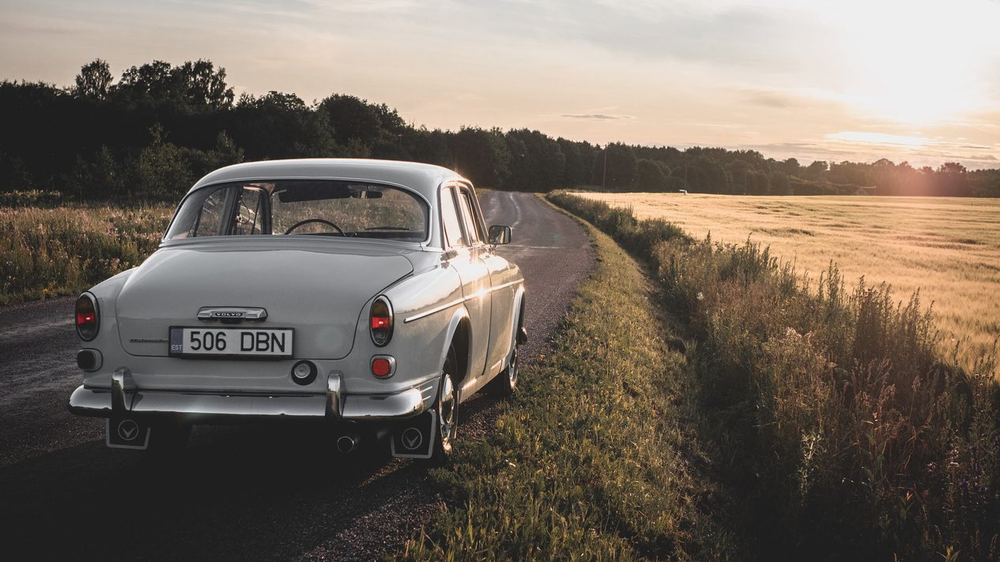
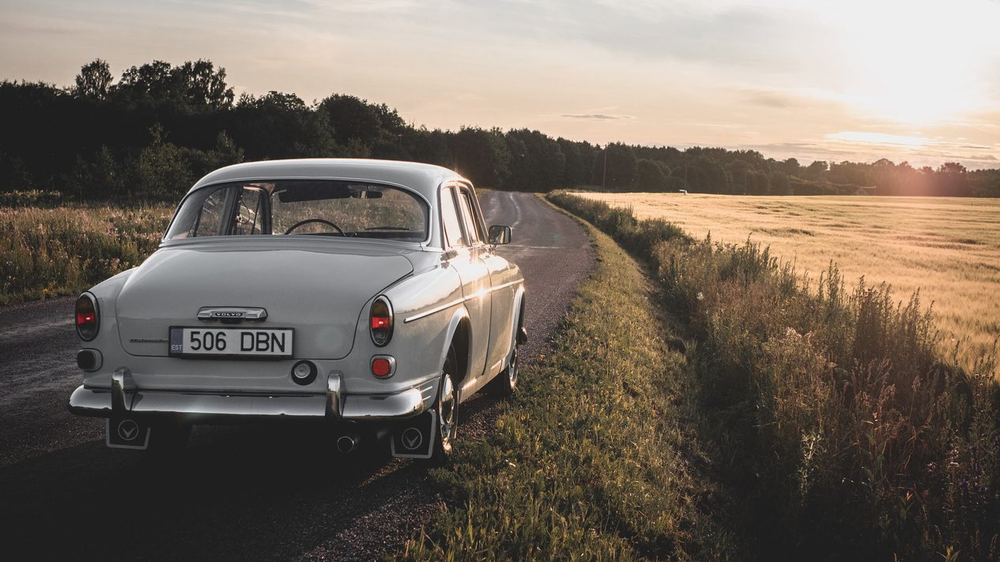

Pulmaauto rent
Pulmasõitudeks sobib hästi klassikaline Volvo Amazon, mille roolis võid olla sina ise või sinule oluline inimene. 55 aastat vana auto on väga heas korras, automaatkasti, 4 ukse ja katuseluugiga. Keera võtit ja naudi sõitu!
Üldinfo
- Sõiduk: Volvo Amazon P121, 1965, 4 ust, automaatkast ja katuseluuk
- Juht: Võtmed kätte! Roolis sina ise või sinu valitud juht.
- Hind: 400 € / ööpäev
- Kontakt: +37259190991, info@tiblu.com
Pildid
Autorid: @tarvotammeoks, Rasmus R, @jakefarra
 



Lisainfo ja tingimused
- Autol on passis 5 kohta, turvavööd on 4 inimese jaoks.
- Autol on tavaline liikluskindlustus, sest kaskot Eestis nii vanale autole ei tehta. See tähendab, et kui auto peaks sattuma avariisse, siis juhul kui juht on süüdi, kannab juht remondikahju.
- Auto saab kätte vastavalt soovile Tallinnas või Harjumaal, Kosel.
- Autot saab enne üritust eelneval kokkuleppel näha ja testisõitu teha. Soovitan kasutada seda võimalust, et ilusal päeval kõik oleks nii nagu ette nähtud.
- Auto on väga heas korras, aga alati on risk, et autoga juhtub midagi enne üritust. Kahjuks mul hetkel pole võimalik asendusautot pakkuda.
- Auto annan täis paagiga ja ootan tagasi täis paagiga. Autosse palun tankida ainult E98 kütust.
Auto ajalugu
Auto tõin 2019 aasta veebruaris Hollandist. Auto nägi juba ostes soliidne välja, kuid siiski leidus läbivat roostet esimeses vasakus lanseronis, tagumises tiivakoopas ja üldisemalt sõiduki tagaosas. Lisaks oli armatuur nadis seisus. Selle auto taastamine praegusesse seisu võttis pea-aegu 5 kuud (koos varuosade ooteajaga), millest nautisin igat minutit. Vahetatud sai kogu armatuur, esimene lanseron, kõik tuled ning käidud üle kogu sabaosa. Esimene auto, mille juures tegin kogu värvi ettevalmistuse ise. Põhjalikumalt saab auto tegemisest ja ajaloost lugeda Eesti Volvo Klubi foorumist - http://foorum.volvoclub.ee/viewtopic.php?f=25&t=53578.